Partie 05
Chapitre 4 : Le serment
L'essentiel
- Les boss : Ignis en trois combats, l'Empereur de Zoldaad et ses 52 000 PV, puis Lazarov sur l'Entreprise.
- Ne rate pas : la Barrette de grâce du château, cachée derrière un livre griffonné et un tableau, et l'épreuve d'Ifrit à la Demeure de chimère.
- Le choix : trois réponses à la base des rebelles, pour Lasswell, puis trois autres au sommet du château, pour Jake.
- Avant de partir : monte de l'Eau sur tout le monde. Ignis et l'Empereur y sont faibles, gardes compris.
Objectif
Entrer dans l'empire de Zoldaad, rejoindre la rébellion, et faire tomber l'Empereur. Jake rejoint le groupe, et c'est le chapitre le plus militaire du jeu : trains, usines d'armes, cachots.
C'est aussi le chapitre qui ouvre le Colisée de Grandshelt, le mode de combat annexe du jeu, détaillé dans la partie 21.
Itinéraire
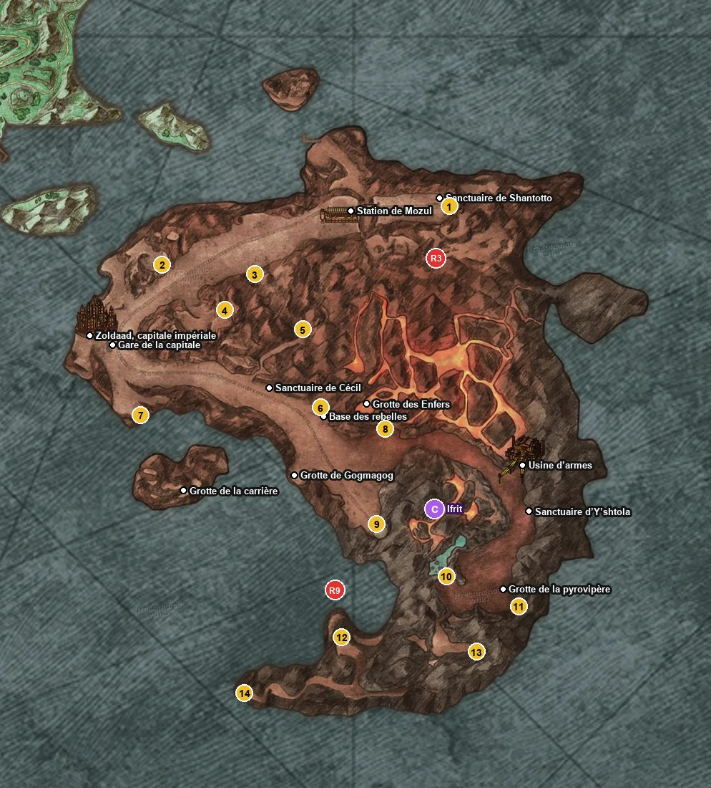
L'île Zoldaad sur la mappemonde — objets à ramasser sur la carte : 1. Boucles d’oreilles d’élém. de feu ; 2. Herbe antidote ×3 ; 3. Super potion ×2 ; 4. Lame de paralysie ×2 ; 5. Anneau maudit ; 6. Marteau de clown ; 7. Reito ; 8. Annihilexique ; 9. Éther + ; 10. Source régénérante ×2 ; 11. Shuriken ×2 ; 12. Maxi-brumipotion ; 13. Plaque éthérée ; 14. Plume de phénix ×2 · fouilles au radar : R3. Magilithe ; R9. Pierre philosophale · C : Ifrit · Carte et repères : ffresonance.wiki (jeu © SQUARE ENIX)
- 📍 La zone en images : la soluce française du chapitre 4 donne les 20 objectifs avec les coffres, et la soluce vidéo française montre les trois combats d'Ignis et le final sur l'Entreprise.
Le chapitre est presque linéaire, ce qui change des précédents :
Station de Mozul → le train, sur la voie ferrée de Timber → Zoldaad, capitale impériale → le tunnel → base des rebelles → usine d'armes → retour à la base → château de Zoldaad → les cachots → la salle du trône → le sommet du château → l'Entreprise.
Un seul aller-retour, celui de l'usine d'armes. Et une fois dans le château, tu n'en sors plus avant la fin du chapitre : fais tes courses à la base des rebelles.
Déroulé pas à pas
Mozul, le train et la capitale
-
Rends-toi à la station de Mozul, objectif 1.
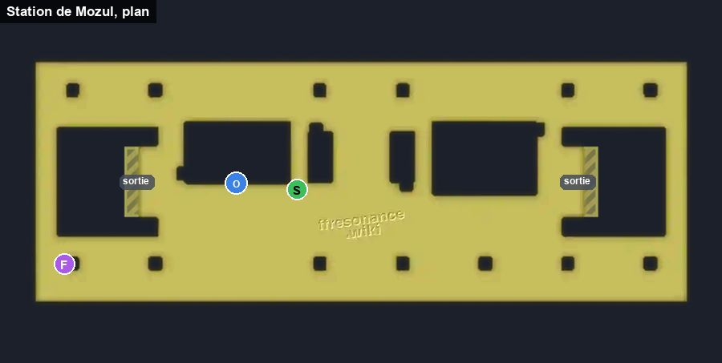
Station de Mozul, plan — F : fragment de tablette · S : point de sauvegarde · boutiques : O objets · Plan et repères : ffresonance.wiki (jeu © SQUARE ENIX) -
Repère les trois sanctuaires qui s'ouvrent ici : Cécil, Shantotto et Y'shtola. Réponses dans la partie 11.
-
Note l'ouverture du Colisée de Grandshelt. C'est maintenant que le mode combat annexe devient disponible, et il reste ouvert jusqu'à la fin du jeu. Il sert aussi à autre chose : gagner le rang Novice 5 y donne le Marteau de Gaïa, qui est la clé de la Chimère Titan. Parties 12 et 21.
-
Repère l'épreuve d'Ifrit, niveau 33, dans le cratère du volcan à l'est de Zoldaad. Aucune fuite possible, et la victoire ajoute Ifrit à tes Chimères. Une de mes sources l'annonce dès ce chapitre, une autre à partir du chapitre 5 : dans les deux cas, c'est l'aéronef qui rend le cratère commode d'accès. Si tu n'y arrives pas maintenant, reviens avec l'aéronef.
-
Repère les deux grottes optionnelles : Gogmagog niveau 34 et Pyrovipère niveau 37. Chacun donne une Magilithe, et la fuite marche contre les deux. À ton niveau actuel, note-les et reviens.
-
Monte à bord du train, objectif 2, et parle aux membres du groupe, objectif 3.
-
Rencontre Jake à bord.
-
Fuis les soldats impériaux, objectif 4, après un combat imposé contre trois Soldat impérial niveau 28, sans fuite possible.
-
Retrouve Gilgamesh sur la voie ferrée si tu l'as revu au Passage de la cascade. Rencontre optionnelle, suite dans la partie 20.
-
Rends-toi en Zoldaad, la capitale impériale, objectif 5.
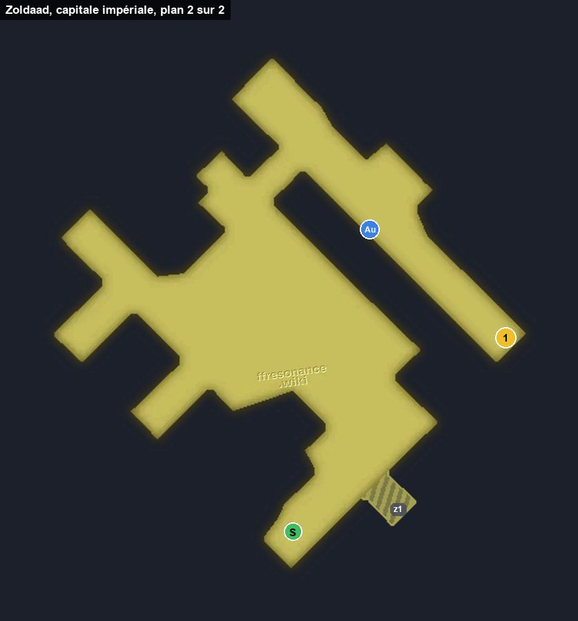
Zoldaad, capitale impériale, plan 2 sur 2 — coffres : 1. Source régénérante ×2 · S : point de sauvegarde · boutiques : Au auberge · zN : passage vers la zone N · Plan et repères : ffresonance.wiki (jeu © SQUARE ENIX) -
Glane des informations, objectif 6 : une scène au Bidonville et une au Marché de la capitale, dans l'ordre que tu veux.
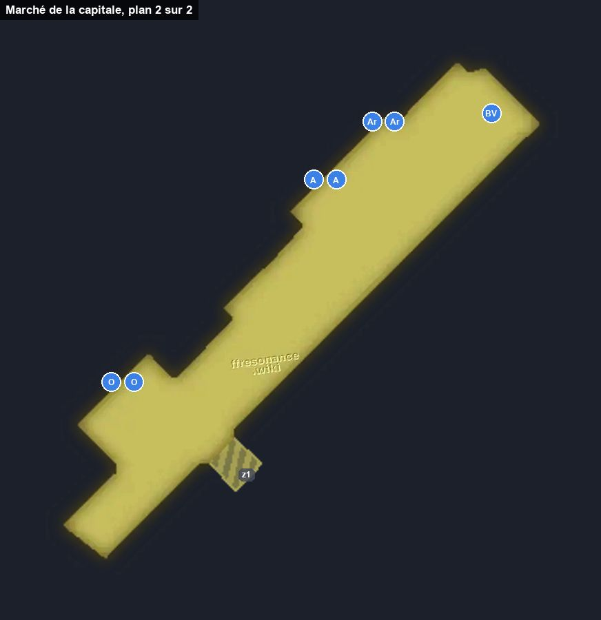
Marché de la capitale, plan 2 sur 2 — boutiques : BV Visions, A armes, O objets, Ar armures · zN : passage vers la zone N · Plan et repères : ffresonance.wiki (jeu © SQUARE ENIX)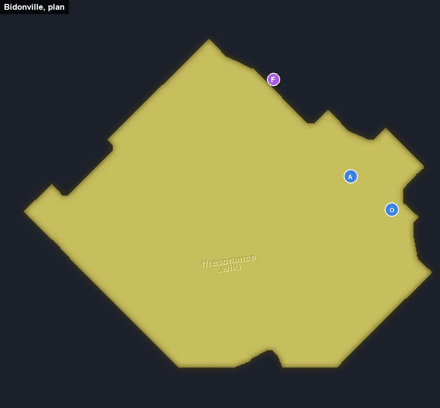
Bidonville, plan — F : fragment de tablette · boutiques : A armes, O objets · Plan et repères : ffresonance.wiki (jeu © SQUARE ENIX) -
Prends la Source régénérante ×2 en zone 2 de la capitale, et la Plume de phénix des Résidences impériales.

Résidences impériales, plan 1 sur 3 — F : fragment de tablette · zN : passage vers la zone N · Plan et repères : ffresonance.wiki (jeu © SQUARE ENIX)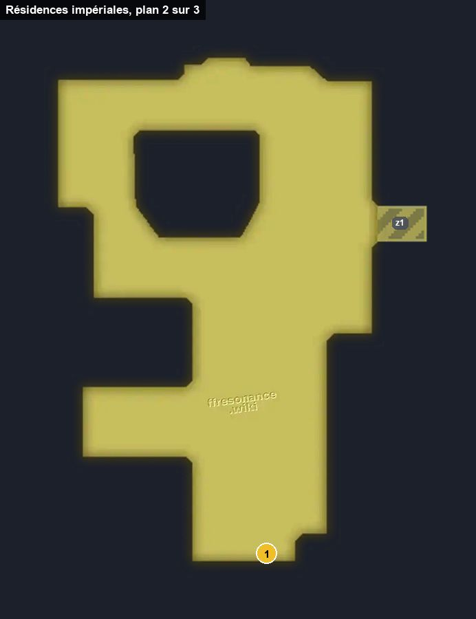
Résidences impériales, plan 2 sur 3 — coffres : 1. Plume de phénix · zN : passage vers la zone N · Plan et repères : ffresonance.wiki (jeu © SQUARE ENIX) -
Rejoins le groupe dans la ruelle, objectif 7, puis progresse dans le tunnel, objectif 8.
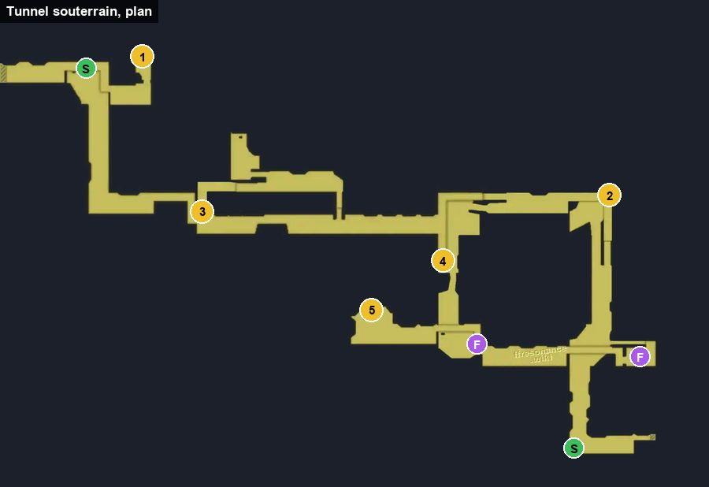
Tunnel souterrain, plan — coffres : 1. Bruméther + ; 2. Fragment de magilithe ; 3. Cloche porte-bonheur ; 4. Éther ×2 ; 5. Super-brumipotion ×2 · F : fragment de tablette (×2) · S : point de sauvegarde · Plan et repères : ffresonance.wiki (jeu © SQUARE ENIX)
La base des rebelles et l'usine d'armes
- Parle aux soldats rebelles, objectif 9, puis partage tes impressions avec Jake, objectif 10. Il rejoint le groupe.
- Choisis ta réponse : trois options, qui donnent un bonus permanent à Lasswell — +10 PM, +3 Force ou +3 Vitesse. Comme il est ton Briseur, la Vitesse le fait jouer plus souvent, donc vider les barres plus vite.
- Vide les coffres de la base :
- zone 1 : Tunique aux roses, Plume de phénix ;
- zone 2 : Remède.
-
Dors à l'auberge de la base, objectif 11. C'est obligatoire : les deux sorties de la base ne s'ouvrent qu'après la nuit.
-
Rends-toi à l'usine d'armes, objectif 12, puis progresse dedans, objectif 13.
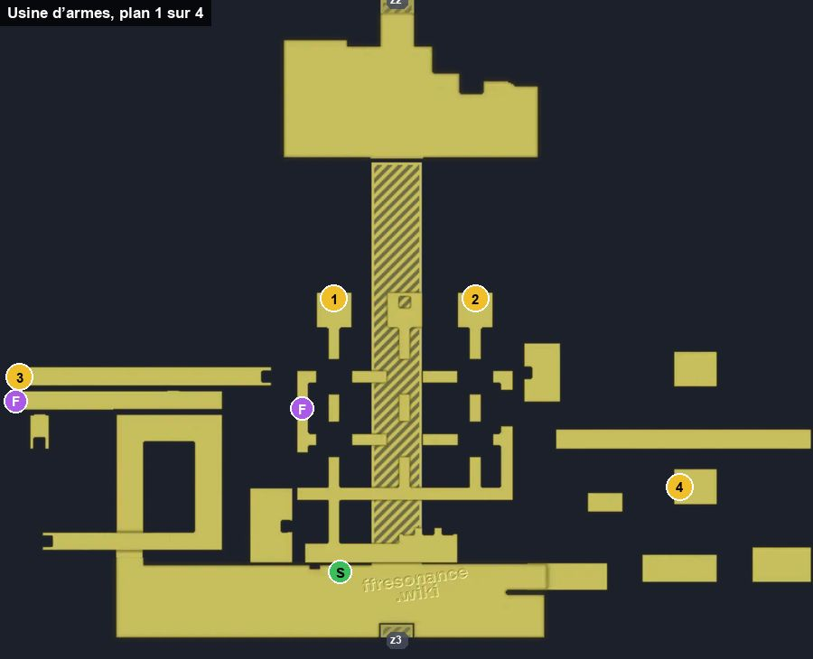
Usine d’armes, plan 1 sur 4 — coffres : 1. Magilithe ; 2. Tenue trompeuse ; 3. Lame de cécité ×3 ; 4. Parchemin foudre I ×3 · F : fragment de tablette (×2) · S : point de sauvegarde · zN : passage vers la zone N · Plan et repères : ffresonance.wiki (jeu © SQUARE ENIX) -
Vide les quatre coffres de l'usine :
- Magilithe ;
- Tenue trompeuse ;
- Lame de cécité ×3 ;
- Parchemin foudre I ×3.
-
Contourne le Pot carmin niveau 30 qui bloque un passage. La fuite marche.
-
Affronte Ignis trois fois. Les deux premiers combats sont scénarisés : tu ne les gagnes pas aux dégâts, inutile d'y brûler tes objets.
-
Gagne le troisième, le vrai : 56 000 PV, faible à l'Eau, et le Feu ne lui fait que la moitié des dégâts. Il laisse un Pendentif solaire.
-
Retourne à la base des rebelles, objectif 14, et va dans la chambre de Jake, objectif 15.

Base des rebelles, plan 1 sur 3 — coffres : 1. Tunique aux roses ; 2. Plume de phénix · F : fragment de tablette (×2) · S : point de sauvegarde · boutiques : A armes, O objets, BV Visions, Au auberge · zN : passage vers la zone N · Plan et repères : ffresonance.wiki (jeu © SQUARE ENIX)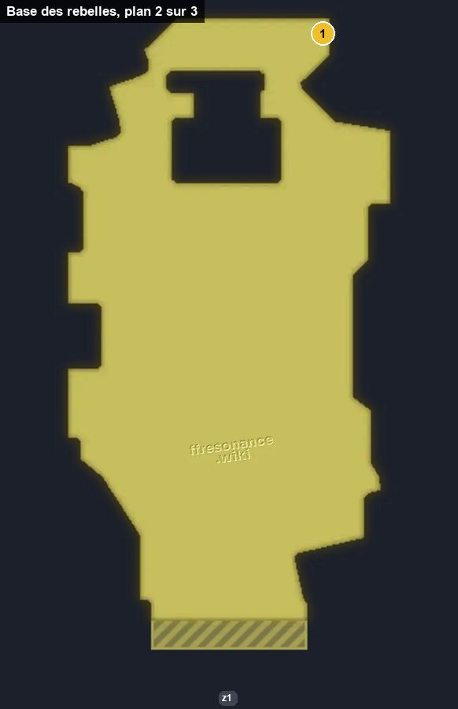
Base des rebelles, plan 2 sur 3 — coffres : 1. Remède · zN : passage vers la zone N · Plan et repères : ffresonance.wiki (jeu © SQUARE ENIX)
Le château de Zoldaad
-
Infiltre-toi dans le château de Zoldaad, objectif 16.

Château de Zoldaad, plan 1 sur 4 — coffres : 1. Kikokusenga ; 2. Maxi-potion · F : fragment de tablette (×2) · S : point de sauvegarde · Plan et repères : ffresonance.wiki (jeu © SQUARE ENIX)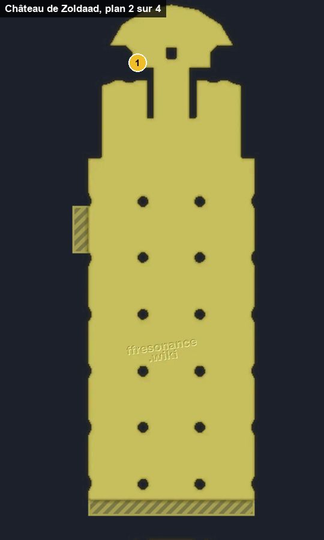
Château de Zoldaad, plan 2 sur 4 — coffres : 1. Épée Kaiser · Plan et repères : ffresonance.wiki (jeu © SQUARE ENIX)
Château de Zoldaad, plan 3 sur 4 — coffres : 1. Bruméther + · S : point de sauvegarde · Plan et repères : ffresonance.wiki (jeu © SQUARE ENIX) -
Vide les quatre coffres du château :
- zone 1 : Kikokusenga, un katana, et une Maxi-potion ;
- zone 2 : Épée Kaiser ;
- zone 3 : Bruméther +.
-
Lis le livre griffonné, puis examine le tableau. Dans cet ordre, et ça donne une Barrette de grâce. Rien ne te signale la manipulation.
-
Accepte l'Éther + offert par un personnage du château. Une seule fois.
-
Sauve Shera dans les cachots, objectif 17.
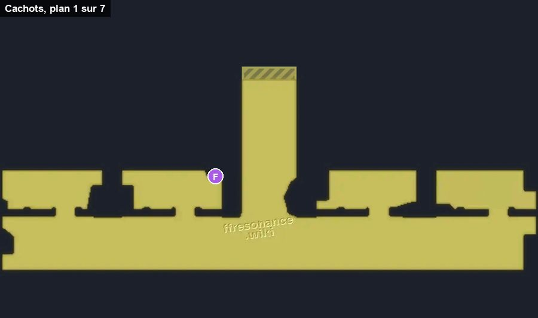
Cachots, plan 1 sur 7 — F : fragment de tablette · Plan et repères : ffresonance.wiki (jeu © SQUARE ENIX)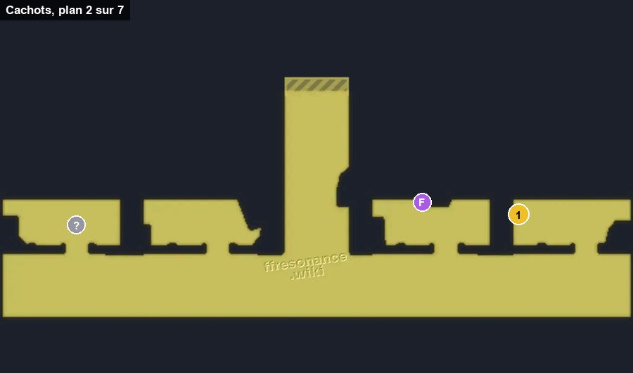
Cachots, plan 2 sur 7 — coffres : 1. Canon à impulsions · F : fragment de tablette · ? : objet à examiner · Plan et repères : ffresonance.wiki (jeu © SQUARE ENIX)
Cachots, plan 3 sur 7 — S : point de sauvegarde · Plan et repères : ffresonance.wiki (jeu © SQUARE ENIX)
Cachots, plan 4 sur 7 — coffres : 1. Plume de phénix · Plan et repères : ffresonance.wiki (jeu © SQUARE ENIX)
Cachots, plan 5 sur 7 — S : point de sauvegarde · Plan et repères : ffresonance.wiki (jeu © SQUARE ENIX)
Cachots, plan 6 sur 7 — coffres : 1. Éther + · Plan et repères : ffresonance.wiki (jeu © SQUARE ENIX)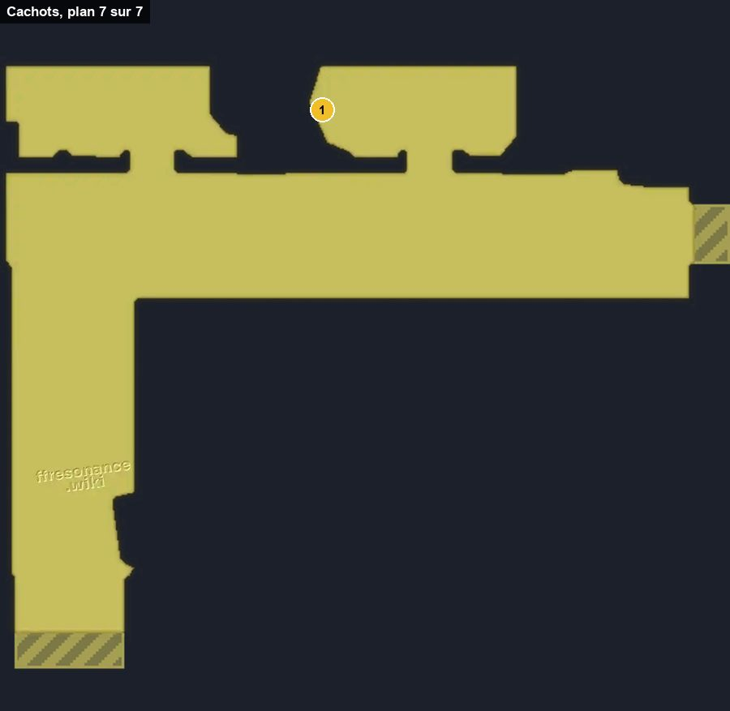
Cachots, plan 7 sur 7 — coffres : 1. Plume de phénix ×2 · Plan et repères : ffresonance.wiki (jeu © SQUARE ENIX) -
Note qu'Ignis se bat à tes côtés, niveau 30, comme invité. C'est agréable, et c'est temporaire.
-
Rends-toi dans la salle du trône, objectif 18, après un combat contre quatre Soldat spectral niveau 28, faibles au Feu et à la Lumière.
-
Obtiens la clé de la salle du trône, par l'un des deux chemins — ils mènent à la même clé :
- battre deux Soldat impérial et un Sergent niveau 28, sans fuite ;
- ou parler au chef de section.
- Bats l'Empereur de Zoldaad : niveau 30, 52 000 PV, faible à l'Eau, accompagné de deux Prétorien spectral et de renforts.
- Élimine les gardes d'abord. Tous sont faibles à l'Eau comme lui, donc l'Impulsion aquatique de Nichol les touche tous d'un coup. Garde Guérison disponible contre le poison et la cécité.
Le sommet et l'Entreprise
- Atteins le sommet du château, objectif 19, où Lid se bat seule contre Évan, niveau 30.
- Ne cherche pas à le tuer : Évan ne peut pas être mis K.O. et revient toujours à 20 % de ses points de vie, quels que soient tes dégâts. Ses attaques sont faibles : laisse la scène se jouer.
- Choisis la réponse pour Jake : trois options, qui donnent +30 PV, +3 Force ou +3 Endurance, en permanence.
- Vaincs Lazarov sur l'Entreprise, objectif 20 : niveau 30, 45 000 PV, faible à la Terre. Attention, ses dégâts reçus sont divisés par deux jusqu'à ce qu'il se fasse une injection en cours de combat — avant ça, ne gâche pas tes grosses attaques.
- Abats ses trois expériences dans leur élément faible :
- Voracité v5 : Feu ou Lumière ;
- Cobaye n°9 : Eau ;
- N°999 : Vent.
- Charge la barre du Mécabo avec le coup de patte de Lid : chaque coup en remplit un neuvième.
- Encaisse la récompense : battre Lazarov donne à Lid sa deuxième Limite, Frappe de l'Entreprise.
Quêtes et lieux
Les 20 objectifs, dans l'ordre
| № | Objectif tel qu'il s'affiche |
|---|---|
| 1 | Se rendre à la station de Mozul |
| 2 | Monter à bord du train |
| 3 | Parler aux membres du groupe |
| 4 | Fuir les soldats impériaux |
| 5 | Se rendre en Zoldaad, la capitale impériale |
| 6 | Glaner des informations en Zoldaad |
| 7 | Se rejoindre dans la ruelle |
| 8 | Progresser dans le tunnel |
| 9 | Parler aux soldats rebelles |
| 10 | Partager vos impressions avec Jake |
| 11 | Séjourner à l'auberge de la base |
| 12 | Se rendre à l'usine d'armes |
| 13 | Progresser dans l'usine |
| 14 | Se rendre à la base des rebelles |
| 15 | Aller dans la chambre de Jake |
| 16 | S'infiltrer dans le château de Zoldaad |
| 17 | Sauver Shera dans les cachots |
| 18 | Se rendre dans la salle du trône |
| 19 | Atteindre le sommet du château |
| 20 | Vaincre Lazarov sur l'Entreprise |
Les lieux et leurs coffres
| Lieu | Coffres | Ce qu'ils contiennent |
|---|---|---|
| Station de Mozul | — | Rien, mais trois sanctuaires et le Colisée |
| Voie ferrée de Timber | — | Un combat imposé, une rencontre de Gilgamesh |
| Zoldaad, capitale impériale | 1 | Source régénérante ×2, plus une Plume de phénix aux Résidences impériales |
| Base des rebelles | 3 | Tunique aux roses, Plume de phénix, Remède |
| Usine d'armes | 4 | Magilithe, Tenue trompeuse, Lame de cécité ×3, Parchemin foudre I ×3 |
| Château de Zoldaad | 4 | Kikokusenga, Maxi-potion, Épée Kaiser, Bruméther + |
Les cachots, la salle du trône et le sommet du château n'ont pas de coffre. La Barrette de grâce du château n'est pas dans un coffre : elle vient du livre griffonné et du tableau.
Les boss du chapitre
| Boss | Niveau | PV | Faiblesse | Ce qui complique |
|---|---|---|---|---|
| Ignis, premier et deuxième combats | 27 | — | — | Scénarisés : ne se gagnent pas aux dégâts |
| Ignis, troisième combat | 27 | 56 000 | Eau, Feu de moitié | Le vrai combat. Laisse le Pendentif solaire |
| Empereur de Zoldaad | 30 | 52 000 | Eau | Deux Prétorien spectral et des renforts, tous faibles à l'Eau |
| Évan | 30 | — | — | Impossible à mettre K.O. : revient à 20 % de ses PV. Lid se bat seule |
| Lazarov | 30 | 45 000 | Terre | Dégâts reçus divisés par deux jusqu'à son injection. Trois expériences |
| Ifrit, épreuve | 33 | — | — | Optionnel, sans fuite. Donne la Chimère Ifrit |
| Gogmagog | 34 | — | — | Optionnel, dans sa grotte. Donne une Magilithe |
| Pyrovipère | 37 | — | — | Optionnel, dans sa grotte. Donne une Magilithe |
Les points de vie d'Évan, d'Ifrit, de Gogmagog et de la Pyrovipère ne sont publiés par aucune de mes sources.
Les trois expériences de Lazarov
| Expérience | Faiblesse |
|---|---|
| Voracité v5 | Feu ou Lumière |
| Cobaye n°9 | Eau |
| N°999 | Vent |
Voracité revient donc une troisième fois, après ses deux formes des ruines de Kolobos au chapitre 1. Même logique qu'alors : la faiblesse change à chaque version.
Les ennemis ordinaires notables
| Lieu | Ennemis |
|---|---|
| Voie ferrée de Timber | Soldat impérial, niveau 28, sans fuite |
| Usine d'armes | Pot carmin, niveau 30, qui bloque un passage |
| Salle du trône | Soldat spectral niveau 28, Sergent, Prétorien spectral |
Les Visions et la Chimère du chapitre
| Nom | Comment l'obtenir |
|---|---|
| Vision Amélia | Quête Au bout du chemin |
| Vision Camille | Quête L'appel lointain |
| Vision Wilhelm | Quête Ô Général ! Mon Général ! |
| Chimère Ifrit | Épreuve optionnelle du cratère du volcan à l'est de Zoldaad, niveau 33 |
Et trois sanctuaires de plus s'ouvrent à la station de Mozul : Cécil, Shantotto et Y'shtola.
Les quêtes rencontrées en chemin
| Quête | Récompense |
|---|---|
| Au bout du chemin | La Vision Amélia, et une Magilithe |
| L'appel lointain | La Vision Camille, et une Magilithe |
| Rebelle solitaire | Une Magilithe et un Diadème rose |
| Ô Général ! Mon Général ! | La Vision Wilhelm, et un Cristal de magilithe |
⚠️ Ma source se contredit ici : elle écrit qu'aucune quête annexe ne s'ouvre au chapitre 4, tout en listant ces quatre quêtes avec leurs récompenses. Le plus probable est qu'elles se prennent ailleurs et se terminent pendant ce chapitre. Si tu ne les vois pas dans ton journal à Zoldaad, elles viendront : la partie 13 donne les 33 quêtes avec leur point de départ.
Butin exhaustif
| Nom exact | Type | Où / comment l'obtenir | Utilité |
|---|---|---|---|
| Kikokusenga | Arme, katana | Château de Zoldaad, zone 1 | La meilleure arme du chapitre pour Lasswell |
| Épée Kaiser | Arme | Château de Zoldaad, zone 2 | Grosse épée pour Rain |
| Lame de cécité | Arme de jet | Usine d'armes, ×3 | Inflige la Cécité |
| Tunique aux roses | Armure | Base des rebelles, zone 1 | Armure légère |
| Tenue trompeuse | Armure | Usine d'armes | Équipement léger |
| Pendentif solaire | Accessoire | Récompense d'Ignis, troisième combat | Accessoire lié au Feu |
| Barrette de grâce | Accessoire | Château de Zoldaad : lire le livre griffonné, puis examiner le tableau | Accessoire de soutien |
| Diadème rose | Accessoire | Quête Rebelle solitaire | Accessoire de soutien |
| Maxi-potion | Consommable | Château de Zoldaad, zone 1 | Gros soin individuel |
| Remède | Consommable | Base des rebelles, zone 2 | Soigne toutes les altérations d'état |
| Plume de phénix | Consommable | Résidences impériales, base des rebelles | Relève à la moitié des PV, là où la Queue de phénix relève au quart |
| Source régénérante | Consommable | Zoldaad, capitale, zone 2, ×2 | Soin |
| Bruméther + | Consommable | Château de Zoldaad, zone 3 | Points de magie pour tout le groupe |
| Éther + | Consommable | Offert par un personnage du château, une seule fois | Points de magie |
| Parchemin foudre I | Consommable offensif | Usine d'armes, ×3 | Dégâts de Foudre |
| Magilithe | Objet d'éveil | Usine d'armes, Gogmagog, Pyrovipère, et trois quêtes | Éveille les Visions — un cran au-dessus du Fragment. Partie 11 |
| Cristal de magilithe | Objet d'éveil | Quête Ô Général ! Mon Général ! | Le cran le plus élevé des objets d'éveil |
| Vision Amélia | Vision | Quête Au bout du chemin | Partie 11 |
| Vision Camille | Vision | Quête L'appel lointain | Partie 11 |
| Vision Wilhelm | Vision | Quête Ô Général ! Mon Général ! | Partie 11 |
| Chimère Ifrit | Chimère | Épreuve du cratère du volcan à l'est de Zoldaad | Invocation de Feu : Flammes de l'enfer. Partie 12 |
| Frappe de l'Entreprise | Limite | Battre Lazarov | La deuxième Limite de Lid |
Conseils et pièges
L'Eau, la clé du chapitre
Ignis au troisième combat, l'Empereur de Zoldaad, ses deux Prétorien spectral et tous ses renforts : faibles à l'Eau. Ignis réduit même le Feu de moitié, ce qui élimine l'autre option évidente contre un boss de feu.
L'Impulsion aquatique de Nichol est le sort du chapitre : elle touche tout le groupe ennemi, et dans ces deux combats, tout le groupe ennemi est faible à l'Eau. Si tu as Léviathan du chapitre 3, c'est l'occasion de l'utiliser.
Les deux premiers Ignis ne se gagnent pas
Tu vas l'affronter trois fois, et les deux premières sont scénarisées : quoi que tu fasses, le combat se termine par la scène prévue. N'y brûle ni Maxi-potion, ni Limite, ni invocation.
Le troisième est le vrai, avec ses 56 000 points de vie. Garde tout pour celui-là.
Lazarov et sa fenêtre d'injection
Tant qu'il ne s'est pas fait son injection, Lazarov encaisse la moitié des dégâts. Taper fort avant ça, c'est perdre la moitié de son effort.
La bonne séquence : occupe-toi de ses trois expériences pendant qu'il est blindé — chacune dans son élément, Feu ou Lumière, Eau, Vent — et garde tes Limites et tes invocations pour l'après-injection. Les coups de patte de Lid remplissent un neuvième de la barre du Mécabo chacun, donc neuf coups pour une barre pleine.
Le livre et le tableau
La Barrette de grâce du château de Zoldaad demande deux gestes dans l'ordre : lire le livre griffonné, puis examiner le tableau. Aucun indice ne relie les deux, et c'est le genre d'objet qu'on découvre six mois plus tard dans un forum.
Dormir n'est pas optionnel
L'objectif 11 te demande de dormir à l'auberge de la base, et ce n'est pas du remplissage : les deux sorties de la base ne s'ouvrent qu'après. Si tu tournes en rond en cherchant la sortie vers l'usine d'armes, c'est que tu n'as pas dormi.
Évan, le boss qu'on n'a pas à battre
Lid seule face à un adversaire qui remonte systématiquement à 20 % de ses PV. Ce n'est pas un combat, c'est une mise en scène. Ses attaques sont faibles, tu ne risques rien : joue trois tours et laisse la scène arriver.
Alertes
- ⏳ La Barrette de grâce du château de Zoldaad demande de lire le livre griffonné puis d'examiner le tableau. Dans cet ordre, et rien ne te le signale.
- ⏳ L'Éther + du château est offert une seule fois par un personnage. Parle à tout le monde avant de descendre aux cachots.
Check-list
- Les trois sanctuaires de Mozul faits : Cécil, Shantotto, Y'shtola
- Colisée de Grandshelt repéré
- Épreuve d'Ifrit repérée au cratère du volcan
- Gogmagog et Pyrovipère repérés dans leurs grottes
- Combat du train passé, Jake rencontré
- Les deux scènes d'informations faites : Bidonville et Marché de la capitale
- Source régénérante ×2 et la Plume de phénix des Résidences impériales prises
- Jake recruté, bonus de Lasswell choisi à la base des rebelles
- Les 3 coffres de la base des rebelles vidés
- Nuit passée à l'auberge, sorties ouvertes
- Les 4 coffres de l'usine d'armes vidés
- Les trois Ignis passés, Pendentif solaire récupéré
- Les 4 coffres du château vidés
- Barrette de grâce obtenue par le livre et le tableau
- Éther + offert récupéré
- Shera sauvée dans les cachots
- Clé de la salle du trône obtenue
- Empereur de Zoldaad battu, gardes éliminés d'abord
- Évan affronté au sommet, statistique de Jake choisie
- Lazarov battu, Frappe de l'Entreprise débloquée